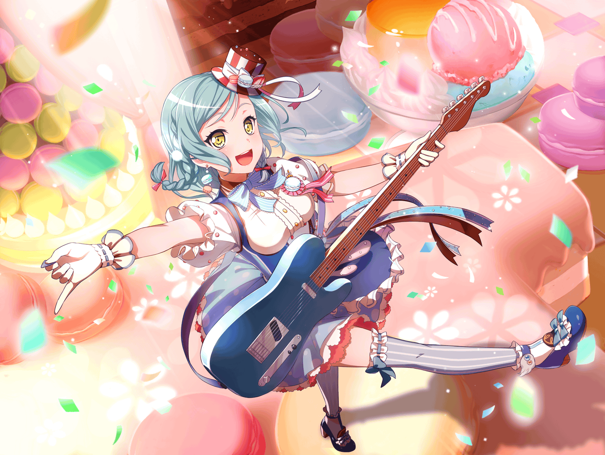

日菜
ふふんふんふ～～ん♪
日菜
お、{{userName}}さんだ
こんにちはー
日菜
こんなところで会うなんて、
意外と世界は狭いねー
日菜
それで、{{userName}}さんは何してるの？
日菜
あ、もしかして今流行りのスマホゲーム？
日菜
歩きスマホは危ないからやっちゃダメだよー
日菜
え？ そんなことしてない？
日菜
あはは、そっかそっか
日菜
勘違いしちゃって、ごめんねー
日菜
あ、そういえば、いつもあたし達パスパレを、
気にしてくれててありがとね
日菜
彩ちゃんに千聖ちゃん、
麻弥ちゃんにイヴちゃん……
日菜
なかなか言えないけどさ、
みんな、{{userName}}さんに感謝してるんだよ
日菜
特に彩ちゃんなんかポンコツだからさー
日菜
あ、そうそう、彩ちゃんと言えばさ……
日菜
あたしさ、一緒にバンドを組んでから、
ずーっと彩ちゃんのことを見てきたんだ
日菜
それこそ毎日のように、練習中も休憩中も
日菜
……なんでそんなに見てるのかって？
日菜
そんなの、彩ちゃんが面白いからに決まってるじゃん！
日菜
ほら、彩ちゃんってポンコツでしょ？
日菜
毎日、練習してるのに全然上手くなんないの
日菜
あたしはわりと簡単にできちゃうから、
彩ちゃんがなんでできないのかよくわかんないんだよねー
日菜
……でも、全然上手くならないのに、
彩ちゃんは絶対に諦めないんだ
日菜
それってすごいことだと思わない？
日菜
普通だったら飽きちゃうような練習を、
ずーっと続けられるなんてさ
日菜
……あ、でもあの時はちょっとヤバかったかも
日菜
ああ、うん。
実は前にね、彩ちゃんと千聖ちゃんが、
言い争いになったことがあったんだー
日菜
彩ちゃんは『努力はいつか報われる』、
千聖ちゃんは『努力が必ず報われるとはかぎらない』って
日菜
ずっと努力し続けた彩ちゃんだから、
千聖ちゃんにそう言われてヘコんじゃってさー
日菜
いや、ヘコんだなんてもんじゃなかったかも
日菜
ヘコんだというより落胆したって表現したほうがいいくらい
日菜
とにかくそれだけショックだったんじゃないかなー
日菜
その後、千聖ちゃんはどっかに行っちゃうし、
彩ちゃんはうなだれちゃうし……
日菜
パスパレ解散の危機！ って感じだったんだー
日菜
さすがの彩ちゃんも、
もう練習に来ないんじゃないかなって思ったよー
日菜
……でも
日菜
心のどこかで、彩ちゃんがこんなことで諦めるわけないって
思ってるあたしもいた
日菜
それで次の日、スタジオに行ったら
実際に彩ちゃんがいたんだよー
日菜
あたし、本当にすごいって思って……
彩ちゃんにずっと思っていたことを伝えたの
日菜
あたしは努力しなくてもなんでもできちゃうから、
できない人の気持ちはわからない……
日菜
だからこそ、彩ちゃんみたいな『できない人』がおもしろいって
日菜
『なんでできないのにめげないのかな？』とか……
日菜
『彩ちゃんって普段何考えてるんだろう？』とか……
日菜
いろいろ考えても全然わかんなくて、るんってして！
日菜
そんな風に彩ちゃんのことを考えていたら、
彩ちゃんが好きになったの！
日菜
そう言ったんだよねー
日菜
実際、今でもその思いは変わんないよ
日菜
愚直に練習する彩ちゃんの不屈の精神！
日菜
それが輝いて見えるんだよね……
日菜
飽き性のあたしがバンドを……
パスパレを続けていられるのは彩ちゃんがいるから
日菜
たぶんあたしはさ……彩ちゃんの努力の先に何があるのか、
間近で見てみたいんだー
日菜
……あはは、なんかすっごい自分語りしちゃった！
日菜
つまり、彩ちゃんのおかげで今のあたしがあって、
みんなと一緒にパスパレでバンドもやってるってこと！
日菜
これで話はおしまい！
それじゃあ、そろそろあたしは行くねー
日菜
ではでは、またスタジオで会いましょー。
バイバーイ